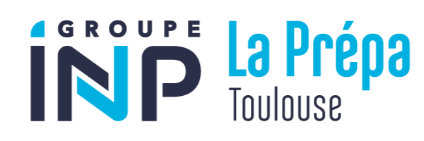
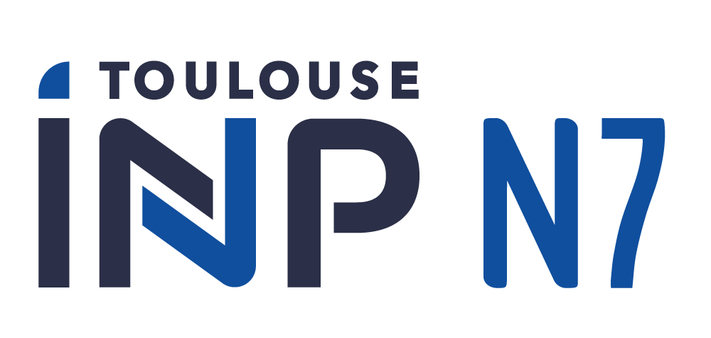
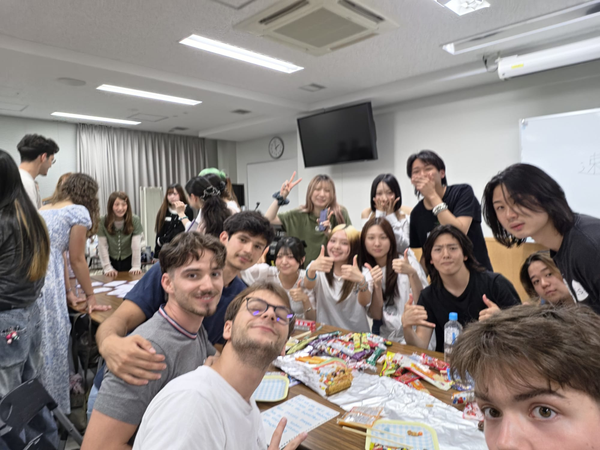
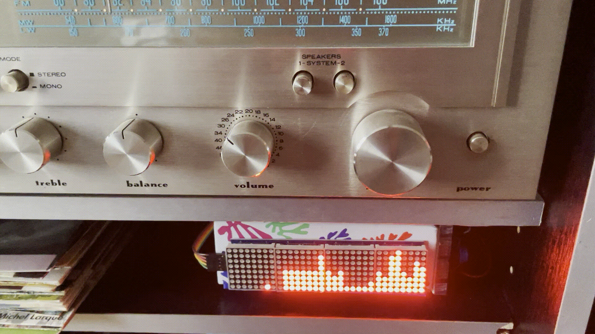
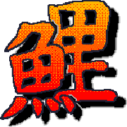
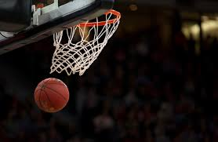
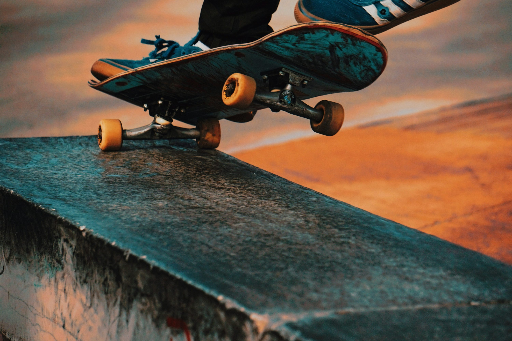
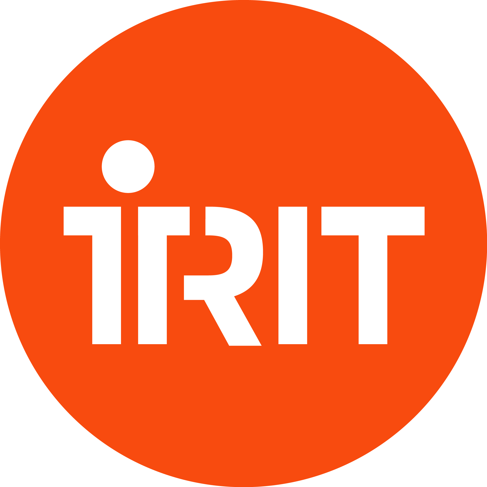

Hello,
I am Rudy Morello, a French engineering student at Toulouse INP-ENSEEIHT, Numerical Sciences department. I am interested in numerical development, that is why I am planning to make a career as a software engineer.
Contact & More
Engineering Course

I started my studies in La Prépa des INP, a higher school preparatory class from the INP group, in Toulouse. This is a general scientific formation so I have studied:
- Maths
- Computer Sciences (Python, SQL, …)
- Physics
- Chemistry
- Biology
- Languages: English, Spanish
- Economical / Social Sciences
- Sustainability
Then, one and a half year later, I specialized my domain to Maths and Computer Sciences.
During the last semester of the formation, I was part of a project about “Space Exploration Sustainability” with a team of 6. With 80 hours of dedicated slots, we explored a lot of solutions for improving the sustainability of a lunar base, and made our own model of it.
At the end of the Prépa, I did an internship of 7 weeks in a computer science laboratory (IRIT) studying APO (Parallel Algorithm and Optimization). See the Career Development tab for more details.

I entered the engineering graduate school ENSEEIHT in Numerical Sciences. I'm currently studying:
- Applied Mathematics
- Program writing with different languages: Ada, C, MatLab, Java
- Computer Structure
- Program Proofs (Roc, WhyML)
- Professional Communication, English, Japanese
- Management
Starting my second year at ENSEEIHT, specializing in Software Systems.
International Experiences
During my engineering cursus, I have traveled and will travel to improve my communication skills, and learn from different cultures. Here are some of my international experiences.
Japan linguistic trip
At the end of my firsy school year (summer 2026), I have made a linguistic trip of 7 weeks in Japan in partnership with a local assocation : the Intercultural Society Of Modern Arts. I have followed 3 weeks of Japanese lessons. Then I worked for 4 weeks in hotel business there to improve my Japanese skills. I have learned to live and work in a culture totally different from mine. It was a very enriching experience.
Sustainability & Civic Engagement
- I participated to a Clean Walk across Toulouse in September 2025.
- I had approximately 2 hours a week of sustainability class during 2 years (before engineering school). I studied a systemic approach applied to engineering sustainability problems.
- I took part in a few sustainability workshops during my studies: Climate Fresk, 2 Ton Activity, Planetary Boundaries Fresco.
Projects
Professional or Study Projects
Router web simulation - 2025
I have implemented a web routing algorithm and some of data structures used in web like the IP address, using Ada.Dijkstra's Algorithm - 2025
As pairs, we implemented the pathfinding algorithm of Dijkstra in C, working on original data structures (trees) also made by ourselves.Real Time Strategy game - 2026
By a team of 7, we developed a real-time strategy game in Java, using Object-oriented programming, the Java graphics library Java SWING and different procedural generation techniques for the map.Signal Decoder - 2026
During our telecommunications coursework, I designed and implemented a simple signal decoder in Matlab.Personal Projects
Arduino equalizer - 2026
I built an Arduino-based equalizer on a led matrix taking directly the analogic sound information from the output of an old record player. I've found most of my inspiration from this project.
My first godot project : Koï - 2026
I have coded and designed the game Koï in about 3 weeks, using the Godot game engine. You can try it on itch.io.
Other Activities
I would rather know how to do a lot of things correctly than know how to do one perfectly. That is why I've practiced a lot of different activities.
Basketball
I used to play basketball in my local club during six years (2016–2022).
Skateboard
I have been practicing skateboard since 2019, it taught me coordination and perseverance.
Game development
Interested in video game development since 2024. I started with Python and I am currently using the open-source game engine Godot.Dexterity activities
Since my childhood, I have been practicing various dexterity activities, such as arts of circus (in a club for 5 years 2011–2016), Kendama (japanese bilboquet), or Slackline. It taught me perseverance and the will to try a lot of various activities.Piano
I recently started playing piano (2024). I have learned music theory basics with books.Career Development
Internships
IRIT – Computer Science Research Institute of Toulouse
- When: from the end of April to mid-June 2025
- Context: end of preparatory class internship
- Subject: I worked on the optimization of sparse matrix solver algorithms. For this, I learned Fortran 90 basics and the Julia language. I was also taught the mathematical approach to optimizing solvers. All my work is published on git:
github.com/8Rudy8/SymbolicFact.jl
